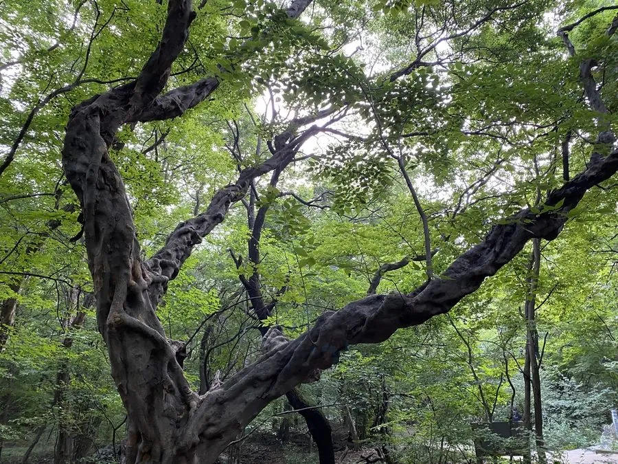

乔木 · 植物界
青檀 Pteroceltis tatarinowii

大麻科青檀属落叶乔木，中国特有的单型属植物，树皮纤维是制作宣纸的主要原料，被列为国家二级保护植物。
- 分类
- 门被子植物门纲木兰纲目蔷薇目科大麻科属青檀属
- 栖息环境
- 海拔 1500 米以下的石灰岩山地、溪谷，耐干旱瘠薄
- 地理分布
- 中国河北、山西、陕西、甘肃、四川、贵州、湖北、湖南、江西、安徽、江苏、浙江等地
- 保护级别
- 国家二级重点保护野生植物；IUCN 暂无评估
物种志
青檀为大麻科青檀属落叶乔木，高可达二十米，树皮灰白色、呈长片状剥落，露出灰绿色内皮。叶片互生，卵形至椭圆状卵形，边缘具锐锯齿，基部三出脉，表面粗糙。花单性，雌雄同株，雄花簇生于叶腋，雌花单生，花期四月；坚果具木质翅，近圆形，成熟时黄褐色，果期八至九月。
青檀是中国特有的单型属植物，分布于河北、山西、陕西、甘肃、四川、贵州、湖北、湖南、江西、安徽、江苏、浙江等地，多生于石灰岩山地和溪谷。它喜光、耐干旱瘠薄，适宜石灰质土壤，在岩石缝隙中也能生长。树皮纤维细长、韧性好，是制作宣纸的主要原料，安徽泾县的宣纸即以青檀皮为原料；木材坚硬，可制农具和家具。由于野生资源减少，被列为国家二级重点保护野生植物。
形态与习性
- 株高可达 20 m，树皮片状剥落
- 花期4 月，花单性、雌雄同株
- 果期8–9 月，坚果具木质翅
- 光照喜光，也耐侧方庇荫
- 水分耐干旱，忌长期积水
- 土壤石灰质山地薄土
- 主要用途树皮制宣纸，木材制农具
趣味知识
- 青檀树皮纤维是宣纸的核心原料，安徽泾县至今仍沿用青檀皮制纸。
- 青檀属只有青檀一种，是中国特有的单型属，对研究榆科演化有意义。
- 它能在石灰岩缝隙中扎根，是喀斯特地区造林的先锋树种。